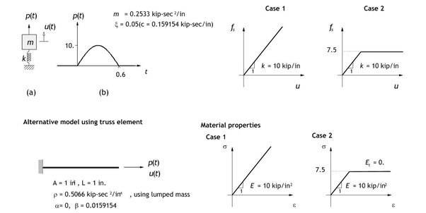
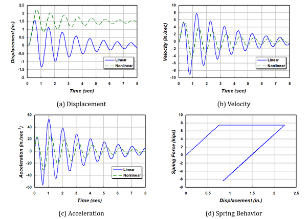
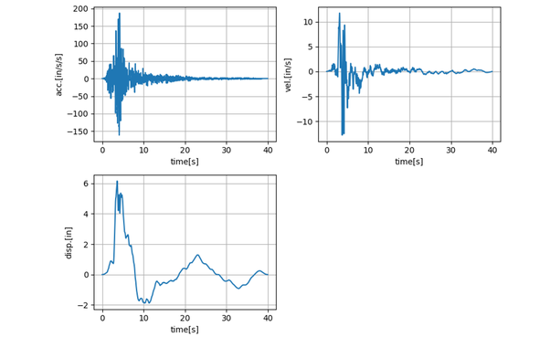
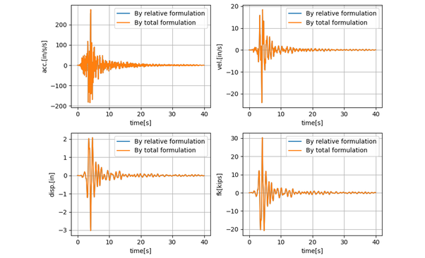
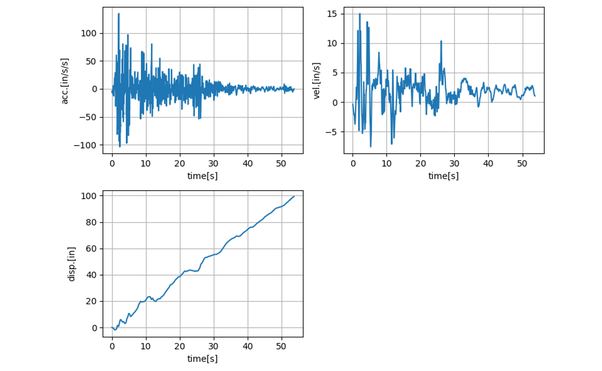
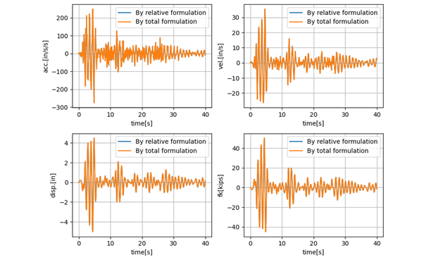
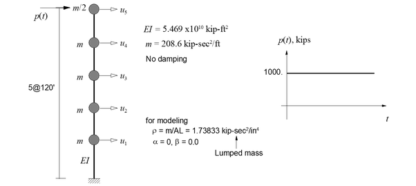
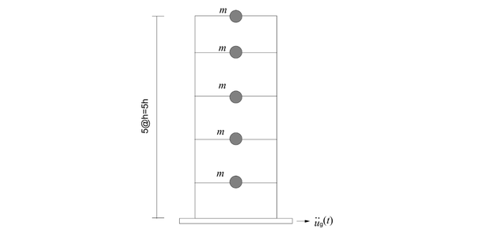
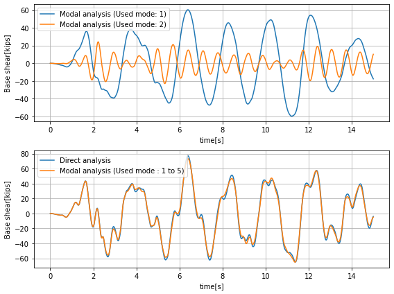

V.6 Dynamic Analysis using Spring and Mass Elements
V.6.1 SDF System
외력으로 반주기 사인 펄스 입력이 주어질 때, 선형 및 비선형 단자유도계의 해석을 수행한다. 선형계의 물성치는 m = 0.2533 kip-sec2/in. k = 10 kips/in., ζ = 0.05(c = 0.159154 kip-sec/in)이고, 비선형계의 물성치는 Figure V.6.1 과 같이 스프링상수가 탄소성 bilinear 모델로 주어져 있다. 그림과 같이 Spring, PointMass, Damper 요소 조합으로 모델링하였고, Truss 요소를 이용해서 모델링하여 서로 동등한지 비교하였다.

Figure V.6.1 Analysis ModelTable V.6.1 Linear SDF system (\(\Delta t\) = 0.1 sec)
| Time | force | disp. | vel. | acc. |
|---|---|---|---|---|
| 0.1 | 5 | 0.043667 | 0.87334 | 17.467 |
| 0.2 | 8.6603 | 0.23262 | 2.9057 | 23.18 |
| 0.3 | 10 | 0.61207 | 4.6833 | 12.372 |
| 0.4 | 8.6603 | 1.0825 | 4.7261 | -11.517 |
| 0.5 | 5 | 1.431 | 2.2421 | -38.162 |
| 0.6 | 0 | 1.4231 | -2.3996 | -54.674 |
| 0.7 | 0 | 0.96218 | -6.8184 | -33.701 |
| 0.8 | 0 | 0.19078 | -8.6096 | -2.122 |
| 0.9 | 0 | -0.60438 | -7.2935 | 28.443 |
| 1 | 0 | -1.1442 | -3.5028 | 47.372 |
Table V.6.2 Nonlinear SDF system (\(\Delta t\) = 0.1 sec)
| Time | force | disp. | vel. | acc. |
|---|---|---|---|---|
| 0.1 | 5 | 0.043667 | 0.87334 | 17.467 |
| 0.2 | 8.6603 | 0.23262 | 2.9057 | 23.18 |
| 0.3 | 10 | 0.61207 | 4.6833 | 12.372 |
| 0.4 | 8.6603 | 1.1144 | 5.3625 | 1.2112 |
| 0.5 | 5 | 1.6215 | 4.7794 | -12.873 |
| 0.6 | 0 | 1.9892 | 2.5745 | -31.227 |
| 0.7 | 0 | 2.0952 | -0.4531 | -29.324 |
| 0.8 | 0 | 1.9241 | -2.9688 | -20.989 |
| 0.9 | 0 | 1.5603 | -4.3075 | -5.7851 |
| 1 | 0 | 1.1416 | -4.067 | 10.595 |

Figure V.6.2 Analysis ResultsInput File
-
mck1.inp : Linear SDF System Modeled with Mass, Damper, and Spring
-
mck1n.inp : Nonlinear SDF System Modeled with Mass, Damper, and Spring
-
mck2.inp : Linear SDF System Modeled with Mass, Truss, and Rayleigh Damping
-
mck1modal.inp : Modal Analysis of Linear SDF System Modeled with Mass, Damper, and Spring
V.6.2 Total and Relative Motion in Earthquake
지진 해석시 입력되는 지반운동에 따라 상대운동 및 전체운동으로 정식화가 가능하다. 다음은 전체운동으로 정식화된 지진입력시 지배방정식이다.
지반운동이 방향벡터과 시간운동의 곱으로 가정하면 운동은 다음과 같이 상대운동과 지반운동의 합으로 표현할 수 있다.
여기에서 방향벡터 r은 지반운동의 방향을 나타낸다. 지배방정식을 상대운동 정리하면 다음과 같다.
위에서 \(\mathbf{Kr} = \mathbf{0}\)은 만족하는데 이는 강체운동에 의미한다. 하지만 질량행렬에 대해서는 \(\mathbf{Mr} \neq \mathbf{0}\)이다. 감쇠행렬은 국부댐퍼로 구성되는 경우에는 \(\mathbf{Cr} = \mathbf{0}\)을 만족한다. Rayleigh damping을 적용하는 경우에는 \(\mathbf{C} = \alpha\mathbf{M} + \beta\mathbf{K}\)이므로 mass proportional damping에 대해서는 \(\mathbf{Cr} \neq \mathbf{0}\)이다. 일반적으로 상대운동에 대한 지배방정식은 다음과 같이 \(- \mathbf{Mr}{\ddot{u}}_{g}(t)\)만을 고려한다.
하는데 이는 mass proportional damping이 존재하지 않을 때 전체운동에 대한 지배방정식과 동등한 식이다.
그림은 단자유도 시스템에 대한 예를 나타낸 것이다. 이 예제에서는 단자유도 시스템을 대상으로 정식화에 따른 결과차이를 검토하였다. 입력되는 지진동은 기저선 보정(baseline correction)이 수행된 지진동과 그렇지 못한 지진동을 대상으로 수행되었다.
Figure V.6.3 SDF system with ground input
기저선 보정이 수행된 지진인 Loma Prieta 지진(RSN765_LOMAP_G01090) 사용시 정식화에 따른 응답값을 차이가 없음을 확인할 수 있다. 또한 기저선 보정이 되지않은 El Centro 지진(Caltech version)을 적용할 경우에도 상대변위를 비교할 때 응답값은 동일함을 알 수 있다. 하지만 지점별로 지진동 입력이 다른 경우는 기저선 보정을 적용하지 않는 지진동의 입력은 문제를 유발할 수도 있다. 입력 예제에서는 *Load, TYPE=Earthquake이 상대운동 정식화에서 우항의 \(- \mathbf{Mr}{\ddot{u}}_{g}(t)\)를 외부하중으로 가력한다. 반면에 *Load, TYPE=Displacement는 지점에 변위이력을 가력하므로 전체운동 정식화를 사용한다. *Load, TYPE=Displacement를 사용할 때 가속도, 속도, 변위 이력이 필요하다. 만약 이중 1개 이력만 가지고 있다면 Hyfeast에 내장된 수치적분 및 수치미분으로 생성해 낼 수 있다. 예제에서는 이들 모두를 검증하고 있다.

Figure V.6.4 Loma Prieta Earthquake (RSN765_LOMAP_G01090)
Figure V.6.5 Response by Loma Prieta Earthquake (RSN765_LOMAP_G01090)
Figure V.6.6 El Centro Earthquake (Caltech version)
Figure V.6.7 Response by El Centro Earthquake (Caltech version)Input File
-
gLOMAP.inp: Example using the Loma Prieta Earthquake (RSN765_LOMAP_G01090)
-
gELCEN.inp : Example using the El Centro Earthquake(Caltech version)
V.6.3 Dynamic Analysis of MDF System
AK Chopra (2005)에 소개된 외력으로 계단함수가 주어진 다자유도계의 해석을 수행한다.

Figure V.6.8 MDF System with Load InputTable V.6.3 Time History Analysis of a MDF system (△t = 0.1 sec)
| TIME (sec) |
u1 hyFeast |
u1 Chopra |
u2 hyFeast |
u2 Chopra |
u3 hyFeast |
u3 Chopra |
u4 hyFeast |
u4 Chopra |
u5 hyFeast |
u5 Chopra |
|---|---|---|---|---|---|---|---|---|---|---|
| 0 | 0.0000 | 0.0000 | 0.0000 | 0.0000 | 0.0000 | 0.0000 | 0.0000 | 0.0000 | 0.0000 | 0.0000 |
| 0.1 | -0.0003 | -0.0003 | -0.0009 | -0.0009 | -0.0003 | -0.0003 | 0.0051 | 0.0051 | 0.0172 | 0.0172 |
| 0.2 | -0.0024 | -0.0024 | -0.0046 | -0.0046 | 0.0028 | 0.0028 | 0.0296 | 0.0297 | 0.0753 | 0.0753 |
| 0.3 | -0.0057 | -0.0057 | -0.0056 | -0.0056 | 0.0214 | 0.0214 | 0.0830 | 0.0830 | 0.1682 | 0.1682 |
| 0.4 | -0.0025 | -0.0025 | 0.0122 | 0.0122 | 0.0660 | 0.0660 | 0.1602 | 0.1602 | 0.2798 | 0.2799 |
| 0.5 | 0.0123 | 0.0123 | 0.0553 | 0.0553 | 0.1366 | 0.1367 | 0.2573 | 0.2574 | 0.4043 | 0.4044 |
| 0.6 | 0.0301 | 0.0301 | 0.1095 | 0.1095 | 0.2270 | 0.2270 | 0.3754 | 0.3755 | 0.5435 | 0.5436 |
| 0.7 | 0.0440 | 0.0440 | 0.1598 | 0.1598 | 0.3221 | 0.3222 | 0.5104 | 0.5105 | 0.7125 | 0.7127 |
| 0.8 | 0.0557 | 0.0557 | 0.2013 | 0.2013 | 0.4084 | 0.4085 | 0.6552 | 0.6553 | 0.9226 | 0.9228 |
| 0.9 | 0.0631 | 0.0631 | 0.2343 | 0.2343 | 0.4900 | 0.4900 | 0.8073 | 0.8075 | 1.1586 | 1.1588 |
| 1 | 0.0689 | 0.0690 | 0.2683 | 0.2683 | 0.5779 | 0.5780 | 0.9655 | 0.9657 | 1.3919 | 1.3921 |
| 1.1 | 0.0831 | 0.0831 | 0.3176 | 0.3177 | 0.6767 | 0.6769 | 1.1214 | 1.1216 | 1.6065 | 1.6068 |
| 1.2 | 0.1037 | 0.1037 | 0.3810 | 0.3811 | 0.7839 | 0.7841 | 1.2698 | 1.2700 | 1.7972 | 1.7974 |
| 1.3 | 0.1219 | 0.1220 | 0.4402 | 0.4403 | 0.8883 | 0.8885 | 1.4114 | 1.4115 | 1.9674 | 1.9676 |
| 1.4 | 0.1341 | 0.1341 | 0.4838 | 0.4838 | 0.9735 | 0.9736 | 1.5388 | 1.5389 | 2.1339 | 2.1341 |
| 1.5 | 0.1406 | 0.1406 | 0.5095 | 0.5095 | 1.0319 | 1.0319 | 1.6456 | 1.6457 | 2.3011 | 2.3012 |
| 1.6 | 0.1413 | 0.1412 | 0.5200 | 0.5199 | 1.0718 | 1.0718 | 1.7338 | 1.7339 | 2.4461 | 2.4462 |
| 1.7 | 0.1408 | 0.1408 | 0.5291 | 0.5290 | 1.1053 | 1.1053 | 1.8001 | 1.8000 | 2.5469 | 2.5469 |
| 1.8 | 0.1479 | 0.1479 | 0.5486 | 0.5486 | 1.1352 | 1.1352 | 1.8389 | 1.8388 | 2.5954 | 2.5953 |
| 1.9 | 0.1575 | 0.1575 | 0.5705 | 0.5705 | 1.1582 | 1.1582 | 1.8519 | 1.8518 | 2.5929 | 2.5926 |
| 2 | 0.1600 | 0.1600 | 0.5781 | 0.5781 | 1.1637 | 1.1636 | 1.8404 | 1.8402 | 2.5544 | 2.5540 |
Input File
- mdf.inp
V.6.4 Five Story Building
AK Chopra (2009)에서 소개한 5층 건물에 대해 시간이력 해석과 응답스펙트럼 해석을 함께 비교한다. 층 중량은 100 kips, 층간 스프링 계수는 31.54 kips/in이고, 지반입력은 AK Chopra (2009)에서 제공하는 El Centro (1940) 지진 기록이다.
fivestory.inp는 직접적분 시간이력 해석과 모달 시간이력 해석을 수행한다. 직접적분 step은 전체 행렬에 5% Rayleigh 감쇠를 적용하고, 모달 step은 5% 모달감쇠를 사용한다. 1차 모드만 사용한 경우와 2차 모드만 사용한 경우도 함께 비교한다. fivestory_rs_verify.inp는 같은 5층 모델과 elcentro_chopra.dat 기록의 같은 15초 구간을 사용하되, 그 시간이력에서 5% 감쇠 응답스펙트럼을 생성한 뒤 SRSS와 CQC 조합의 ResponseSpectrum 해석을 수행한다.
주어진 시스템은 자유도가 5개이므로 5개 모드를 모두 사용한 모달 시간이력 결과는 직접적분 결과와 거의 같아야 한다. V.6.10은 기존과 같이 Direct와 Modal 시간이력 결과를 비교한다. 응답스펙트럼 결과는 부호와 발생시각이 없는 envelope 응답이므로, 시간이력 곡선과 함께 그리지 않고 지붕 변위 절대최대값만 표로 비교한다.

Figure V.6.9 Five Story Building(Example from AK Chopra (2009) Section 13.2.6)
Figure V.6.10 Direct와 Modal 시간이력 해석 결과 비교Table V.6.11 지붕 절점 X변위 절대최대값 비교
| Analysis | Peak absolute roof displacement [in] | Ratio to Direct |
|---|---|---|
| Direct | 6.9066 | 1.000 |
| Modal 1-5 | 6.8320 | 0.989 |
| RS SRSS | 6.8969 | 0.999 |
| RS CQC | 6.8896 | 0.998 |
Input File
-
fivestory.inp
-
fivestory-ByDB.inp : 동일한 5층 예제를 TimeSignal DB 입력 방식으로 작성한 입력 파일
-
fivestory_rs_verify.inp : 같은 El Centro 시간이력에서 생성한 ResponseSpectrum 예제
-
elcentro_chopra.dat : 5층 예제에서 사용하는 El Centro 지진 기록
V.6.5 Initial Velocity
*InitialCondition, Type=Velocity가 직접 시간적분 step의 시작 속도를 지정하는 것을 질량-스프링 모델로 확인한다.
1자유도계 초기속도. 질량 \(m=1\), 강성 \(k=4\pi^2\)인 1자유도계에 초기속도 \(v_0=1\ \mathrm{m/s}\)를 준다. 비감쇠 Newmark 해는 \(u=v_0\sin(\omega t)/\omega\), Rayleigh 감쇠비 \(\zeta=0.05\)의 HHT 해는 \(u=v_0e^{-\zeta\omega t}\sin(\omega_dt)/\omega_d\)와 비교한다. 시간증분은 \(\Delta t=0.01\ \mathrm{s}\)이다.
2자유도 연쇄의 부분 재설정. 두 질량-스프링 자유도의 HHT 체인에서 첫 step은 \(v_2=1\ \mathrm{m/s}\)로 시작하고, 두 번째 step은 Prev=로 이어받으며 \(v_3=-0.5\ \mathrm{m/s}\)만 재설정한다. 두 번째 step의 초기 프레임에서 변위, 가속도, 재설정하지 않은 속도 \(v_2\)는 첫 step의 끝 값과 같아야 한다.
Table V.6.12 Initial Velocity Results
| 예제 | 확인 항목 | 결과 |
|---|---|---|
| 1자유도계 초기속도 | 최대 변위 오차 (진폭 \(0.159\ \mathrm{m}\)) | 비감쇠 \(6.58\times10^{-4}\ \mathrm{m}\), 감쇠 \(4.99\times10^{-4}\ \mathrm{m}\) |
| 2자유도 연쇄 | 두 번째 step의 초기 프레임 | 첫 step의 끝 값에 일치 |
1자유도계의 변위 오차는 진폭의 0.4%로 평균가속도법의 주기 신장 수준이며, 초기 프레임의 속도는 정확히 \(v_0\)이다.
Input File
initial-velocity-sdof.inp: 1자유도계 초기속도initial-velocity-chain.inp: 2자유도 연쇄의 부분 재설정
References
-
Example 5.3(pp. 178), Example 5.5 (pp. 188) in Chopra, A. K. (2009). Dynamics of structures: Theory and applications to earthquake engineering (4th ed.). Prentice Hall.
-
Example 5.3 (pp. 168), Example 5.5 (pp.179) in Chopra, A. K. (1995). Dynamics of structures: Theory and applications to earthquake engineering. Prentice Hall.
-
Example 15.2 (p.577) in Chopra, A. K. (1995). Dynamics of structures: Theory and applications to earthquake engineering. Prentice Hall.
-
Section 13.2.6 Example: Five-Story Shear Frame (p.531) in Chopra, A. K. (2009). Dynamics of structures: Theory and applications to earthquake engineering (4th ed.). Prentice Hall.